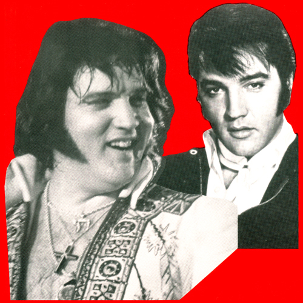

1000 DAYS OF THEORY
Sun King American Style
On the 30th Anniversary of Elvis' Death
Arthur Kroker
"Our love of Elvis brought us together," he says on the dust jacket, "but his ghost drove us apart." The book, In the Shadow of the
King: Priscilla, Elvis and Me, was selling very well, said the chairman of St. Martin's Press, Thomas J. McCormack.
"They don't all sell, but the tremendous majority of things having to do with Elvis do well," Mr. McCormack said, "like it used to be with the
Beatles, like the royals in Britain. This is our Princess Di."
-- Serge Schmemann
New York Times

Elvis as a cynical commentary? Or the outbreak in Memphis, Tennessee, deep in the heart of the heart of the country, of a more primitive Jungian
archetype -- the Sun King?
Or both? A cynical commodity to such a point of excess, hysteria and exhaustion that Elvis actually disappeared into his own promotional culture.
The Elvis commodity, then, achieving such a global degree of cynical exchange-value that that heartbreak voice, the sneer, the DA hair, and the
rock 'n rollin' legs on stage with that guitar, and the screaming fans actually vanished into a massive black hole. As it grew more heated and
intensive, the Elvis myth burst into a final brilliant luminosity, exploded inwards with a fantastic density of energy, and then settled down through
the '70s and the '80s as a steadily-flashing cultural pulsar. What emerged from that cultural pulsar (the final stage of a dying star) were the five
faces of Elvis: sometimes movie star (Blue Hawaii), confirmed rock 'n roll heart-throb; good ol' southern boy playing with his buddies; unpredictable
philanthropist to the poor; and a real '50s sex symbol. And just like Marilyn Monroe and Jimmy Dean before him, Elvis can still attract such
necrophiliac fascination because he was always a promotional simulacra which could be wrapped around any passing mood. Thus, in the '70s, it was
Elvis' death as a tragedy, and in the '80s a nostalgia feast for our own time passing. In the end as in the beginning, he was the perfect
fusion of voice, autobiography, commodity opportunity, and national mood.
But not just a cynical commodity. If Elvis can continue to be the charismatic pole of romantic populism (in many towns, all night vigils marked
the 10th anniversary of his death), that's because he was, not just the King, but the mythical Sun King. And Elvis knew it, and parodied his
entrapment (thus the Aztec sun symbols on his Las Vegas costumes). But, once nominated, no one can escape the dual fate of the Sun King: to be an
object of sacrifice and adulation, and to be imprisoned in the charismatic, and hokey, role of a god. A good ol' southern boy, brim full of energy,
with a voice so achingly good that you didn't know you just wanted to cry when he sang, especially the love songs, who had nowhere to go but to
excess. And so, the Sun King went over to the dark side of self-liquidation, self-cancellation, and self-exhaustion: with drugs, with excrement, with
sex (but never with his wife, except that once). His was the final ballad of sacrifice (other people's) and violence (against himself).
But still, even in his dying days the Sun King had this curious quality. If you watched his first big comeback Las Vegas show -- yes, the one with
the black leather outfit -- for all of his self-cynicism, there was a voice, and the tangible hint of a memory behind that voice, which was just
bursting to get out, and once it did, who could refuse to admit that the King was finally back. And again, if you saw one of his last Las Vegas shows
-- the one where he is probably sky-high on drugs, actually forgets the words to the songs, swallows the microphone, and still the audience cheers --
well, in that last image of Elvis in ruins, the fat man, there is a trace of pathos and self-denigration so deep, so true and so diamond-sharp that
you know that you are finally in the presence of the last violent, sacrificial rites of a Sun King American Style.
Acknowledgments
-----------------------------
First published as "Panic Elvis" in Arthur Kroker, Marilouise Kroker and David Cook. Panic Encyclopedia: the definitive guide to the postmodern scene. New York:
St. Martin's Press, 1989. 95-96.